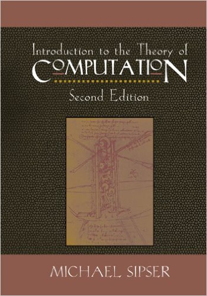
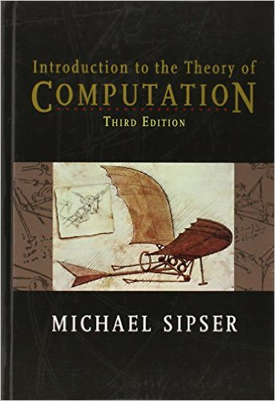
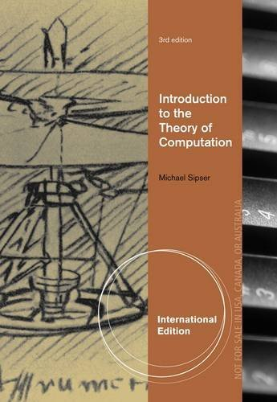

Overview
-
- Term
- Spring 2017
- Time
- TTh 2–3:15pm
- Location
- 129 DeBartolo Hall
- Instructor
- Dr. David Chiang
- Time
- TTh 11am–12:15pm
- Instructor
- Dr. Peter Kogge
Notre Dame:
California:
- Prerequisites
- Discrete Mathematics (CSE 20110) or equivalent. You especially need to be comfortable with sets, tuples, functions, relations, and graphs; and writing proofs by contradiction and by induction.
- Required text
- Michael Sipser's Introduction to the Theory of Computation, in either the 2nd or 3rd edition:
 2nd Edition, 2005
ISBN: 0-534-95097-3
Links: Amazon errata 3rd Edition, 2012
ISBN: 1-133-18779-X
Links: Amazon errata
On reserve in the Engineering Library. 3rd International Edition, 2012
ISBN: 1-133-18781-1
Links: Amazon errata
- Description
- Introduction to formal languages and automata, computability theory, and complexity theory with the goal of developing understanding of the power and limits of different computational models. Topics covered include:
- regular languages and finite automata
- context-free grammars and pushdown automata
- Turing machines; undecidable languages
- the classes P and NP; NP completeness
- Links
- The following sites will be used in this course:
- Sakai for submitting assignments and receiving grades
- Piazza for questions and answers
- Slack for informal discussion
- Notes and assignments will be linked from here, but you can also clone the Github repository
Staff


Undergraduate TA
Benjamin Gunning
bgunning@nd.edu
Thu 9–11pm, 212/213 Cushing
Undergraduate TA
Christopher Syers
csyers@nd.edu
Mon 9–11pm, 212/213 Cushing

Undergraduate TA
Cindy Xinyi Wang
xwang29@nd.edu
Tue 7–9pm, 212/213 Cushing
Requirements
| Component | Points |
|---|---|
| Homework (HW) | 8 × 30 |
| Course project (CP) | 4 × 30 |
| Midterm exams (ME) | 2 × 60 |
| Final exam (FE) | 120 |
| Total | 600 |
| Letter grade | Points |
|---|---|
| A A− | 560–600 540–559 |
| B+ B B− | 520–539 500–519 480–499 |
| C+ C C− | 460–479 440–459 420–439 |
| D | 360–419 |
| F | 0–359 |
Schedule
| Unit | Week of | Topic | Assignment Due | |
|---|---|---|---|---|
| 01/17 | Introduction and background | |||
| I | 01/24 | Finite automata | HW1 | |
| 01/31 | DFA = NFA = regular expressions | HW2 | ||
| 02/07 | Non-regular languages | CP1 | ||
| 02/14 | Review and midterm | |||
| II | 02/21 | Context free grammars, pushdown automata | HW3 | |
| 02/28 | CFG to PDA and PDA to CFG | HW4 | ||
| 03/07 | Non-context-free languages | CP2 | ||
| Spring break | ||||
| III | 03/21 | Turing machines | HW5 | |
| 03/28 | The universal TM and undecidability | HW6 | ||
| 04/04 | Reducibility | CP3 | ||
| 04/11 Holy Week |
Review and midterm | |||
| IV | 04/18 | P and NP | HW7 | |
| 04/25 | NP-completeness | CP4 | ||
| 05/02 | More NP-completeness | HW8 | ||
| 05/08 10:30–12:30 | Final exam | |||
Project
Throughout the semester, you will implement some of the ideas you've learned in a series of three text-processing tools.
In Project 1, you'll implement nondeterministic finite automata (NFA). Nondeterminism (essentially, unbounded parallelism) is one of the core concepts in the course, and implementing it will demonstrate how to simulate nondeterminism on deterministic hardware.
In Project 2, you'll write a parser for regular expressions and combine it with NFAs to build a regular expression matcher. Your implementation will be asymptotically much faster than an implementation would be that uses Perl or Python's built-in regular expressions.
In Project 3, you'll extend the regular expression matcher to a tool that can define transformations from an input string to an output string. Tools of this sort have been used extensively in computational linguistics.
Finally, in Project 4, your regular expressions will metamorphose into a full-fledged programming language. As a taste, here's a program that factorizes a number written in unary notation:
(:#)111*(:#)111*((:#)111*)*;
{x*(#1:x#)1*)*};
((x:1)*#)*
- You can work in teams of up to three. Each team member should contribute a roughly equal amount of work.
- You can write in C++ (including all standard libraries except
<regex>) or Python (including all standard libraries exceptre). Python is recommended. You can also write in another language with permission from the instructor.
Policies
Attendance
Students are expected to attend all classes. Foreseeable absences should be discussed with the instructor ahead of time.
Late Work
In the case of a serious illness or other excused absence, as defined by university policies, coursework submissions will be accepted late by the same number of days as the excused absence.
Otherwise, you may submit some problems on time for full credit, and other problems late with a penalty of 10% per day (rounded down to the nearest point). No problem can be submitted more than once.
Honor Code
All work that you submit must be your own; that is, it must represent your own understanding, in your own words. Discussion of problems is encouraged, but writing solutions together or looking at other students' solutions is not allowed. Any print or online resources that you use must be cited properly; use of solution manuals is not allowed.
Students with Disabilities
Any student who has a documented disability and is registered with Disability Services should speak with the professor as soon as possible regarding accommodations. Students who are not registered should contact the Office of Disability Services.
Classroom Recording
This semester we will be using an automated classroom recording system. This system allows us to record and distribute lectures to you in a secure environment. You can watch these recordings on your computer, tablet, or smartphone. The recordings can be accessed within Sakai. Look for the tool labeled "Echo360 ALP" on the left hand side of the course.
Because we will be recording in the classroom, your questions and comments may be recorded. (Video recordings typically only capture the front of the classroom.) If you have any concerns about your voice or image being recorded, please speak to me to determine an alternative means of participating. No content will be shared with individuals outside of your course without your permission, except for faculty and staff that need access for support.
These recordings are jointly copyrighted by the University of Notre Dame and your instructor. Posting them to other websites (including YouTube, Facebook, SnapChat, etc.) or elsewhere without express, written permission may result in disciplinary action and possible civil prosecution.